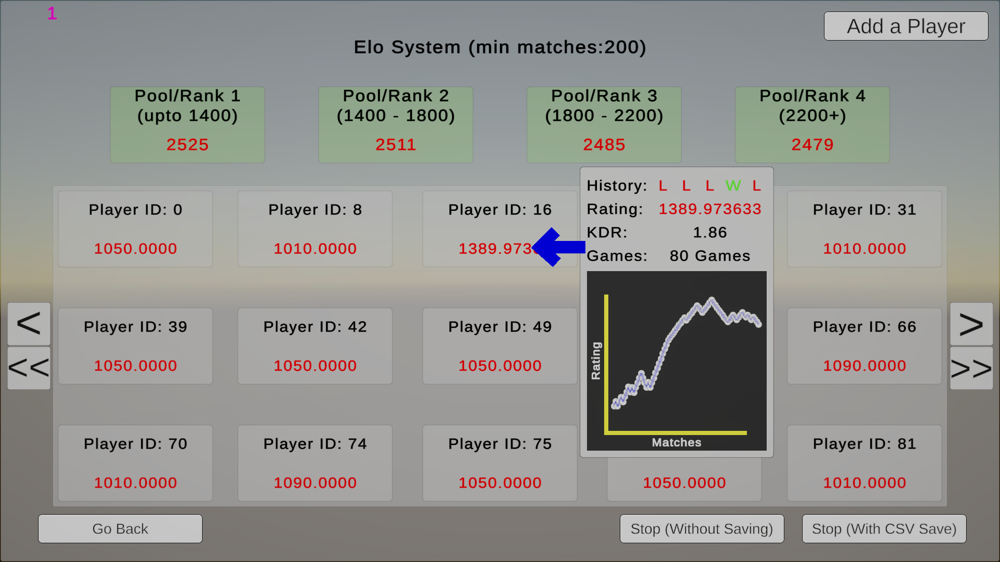
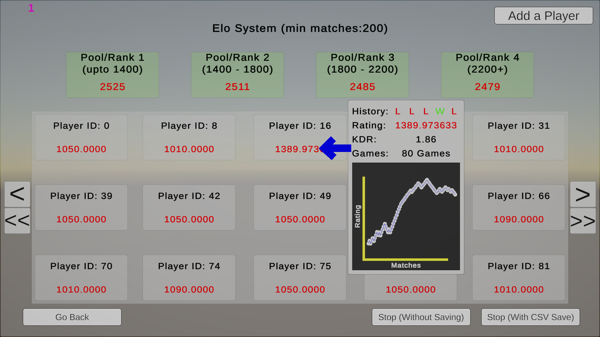

What is it?
• A scalable Unity C# simulation framework capable of modelling 10,000 synthetic players with fixed real-skill distributions, realistic multiplayer dynamics (probabilistic duels, assists, clutches) and player behaviours (smurfing).
• It allows reproducible large-scale benchmarking of different matchmaking systems.
• I have implemented the entirety of the project, using Unity Engine, C#, and Python for data analysis and visualisation.
Motivation
• This project is the final MSc coursework project, and is motivated by the lack of matchmaking algorithm benchmarking softwares.
• The project implements and assesses multiple matchmaking algorithms (Elo, Glicko, TrueSkill, a custom SmartMatch System) in a repeatable manner, providing data-driven insights into their trade-offs.
Work Done
• Implemented synthetic player behaviour, realistic match simulation, and the matchmaking algorithms (Elo, Glicko, TrueSkill, and a novel SmartMatch).
• Performed comparative analysis of fairness, rating convergence, smurf detection, and player experience across algorithms, producing data-driven insights using Python.
• Created methods for results visualisation and reporting, including graphs and statistical summaries.
• Managed UI and UX for the simulation control and data presentation.
• Created a robust and extensible software capable of simulating various matchmaking systems under identical conditions, resulting into reproducible and verifiable results.
Code Example
The coroutine (SimulateMatch) simulates a competitive match between two teams, round by round, using an Elo-based probability model for engagements. It also updates per-player statistics such as kills, assists, clutches, and adjusts Elo ratings at the end of the match.
double p1WinProb = 1.0 / (1.0 + Math.Pow(10, (p2.playerData.RealSkill - p1.playerData.RealSkill) / 400.0));
bool p1Wins = rng.NextDouble() < p1WinProb;
if (p1Wins)
{
p1.playerData.Kills++;
p2.playerData.Deaths++;
aliveTeam2.Remove(p2);
}
else
{
p2.playerData.Kills++;
p1.playerData.Deaths++;
aliveTeam1.Remove(p1);
}
Full Method (GitHub)
This snippet shows how each duel outcome is probabilistically determined based on player skill ratings. Over many rounds, this produces realistic match results and allows for post-game Elo adjustments.
Photos
Main Screen: Simulation Screen:

Exported CSV Data:
Verifications for Matchmaking Systems:
Simulation Screen:

Exported CSV Data:
Verifications for Matchmaking Systems: